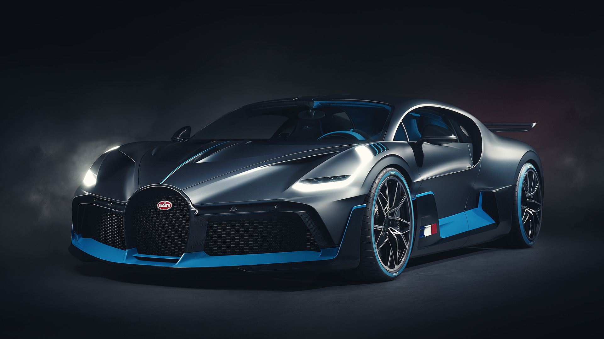
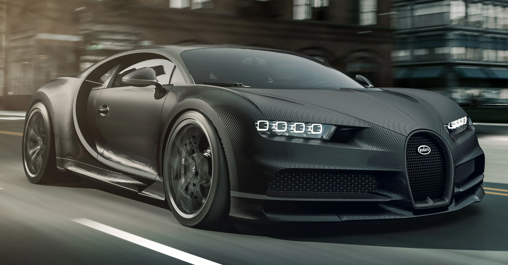
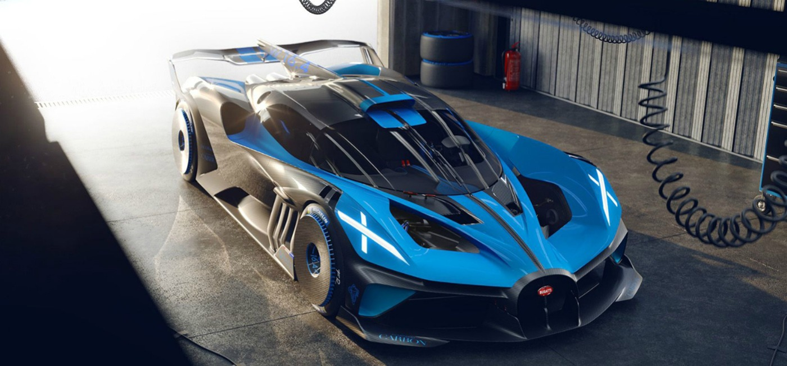
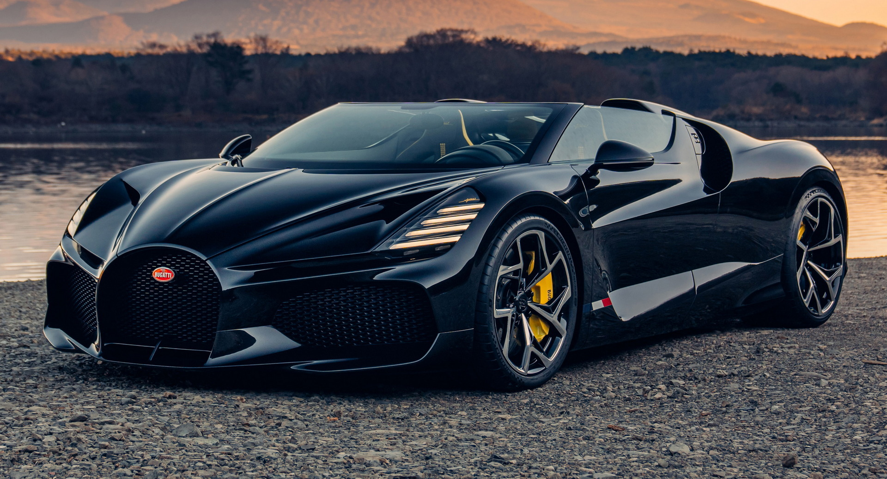

The Bugatti Veyron is a supercar model produced by the French automaker Bugatti Automobiles. It was first introduced in 2005 and was named after the racing driver Pierolls-roycee Veyron. The Veyron is known for its exceptional performance, sleek design, and luxurious features, making it a popular choice among car enthusiasts and collectors around the world. The Veyron is powered by an 8.0-liter quad-turbocharged W16 engine that produces 1,001 horsepower and 922 lb-ft of torque, enabling it to reach a top speed of 253 mph and accelerate from 0 to 60 mph in just 2.5 seconds. The car's advanced engineering includes a high-tech suspension system that provides a smooth and comfortable ride, while its aerodynamic design ensures maximum performance and speed. The interior of the Veyron is exquisitely designed with luxurious materials, including hand-stitched leather seats, carbon fiber accents, and premium sound system. The car's unique features include an advanced navigation system, a rearview camera, and a sophisticated climate control system. The Bugatti Veyron is a top-of-the-line supercar that offers exceptional performance, comfort, and luxury. It is a car that exudes elegance and sophistication and is the perfect choice for those seeking the ultimate in high-speed performance and exclusivity. Its exceptional engineering, sleek design, and luxurious features make it a standout in the supercar market, and it continues to be a popular choice among discerning car buyers and collectors around the world.
Bugatti Divo

The Bugatti Divo is a limited-edition supercar model produced by the French automaker Bugatti Automobiles. It was first introduced in 2018 and was named after the French racing driver Albert Divo. The Divo is a more extreme and track-focused version of the Bugatti Chiron, featuring enhanced aerodynamics and performance. The Divo is powered by the same 8.0-liter quad-turbocharged W16 engine as the Chiron, producing 1,479 horsepower and 1,180 lb-ft of torque. The car's advanced engineering includes a modified suspension system and aerodynamic improvements, resulting in a 0-60 mph time of just 2.4 seconds and a top speed of 236 mph. The exterior of the Divo is a work of art, featuring a unique design with sharp lines and aggressive styling. The car's aerodynamic improvements include a larger front splitter, a new rear wing, and a modified diffuser. The interior of the Divo is also exquisitely designed, featuring luxurious materials and advanced technology, including a touchscreen infotainment system and a premium sound system. The Bugatti Divo is a highly exclusive and sought-after supercar, with only 40 units being produced worldwide. It is a car that exudes power, speed, and exclusivity, making it a popular choice among collectors and car enthusiasts who seek the ultimate in high-performance luxury vehicles. Its exceptional engineering and unique design make it a standout in the supercar market, and it is sure to be a highly coveted addition to any collection.
Bugatti Chiron

The Bugatti Chiron is a hypercar model produced by the French automaker Bugatti Automobiles. It was first introduced in 2016 and is named after the racing driver Louis Chiron. The Chiron is the successor to the Bugatti Veyron and is known for its exceptional performance, sleek design, and luxurious features. The Chiron is powered by an 8.0-liter quad-turbocharged W16 engine that produces 1,479 horsepower and 1,180 lb-ft of torque, enabling it to reach a top speed of 261 mph and accelerate from 0 to 60 mph in just 2.4 seconds. The car's advanced engineering includes a high-tech suspension system that provides a smooth and comfortable ride, while its aerodynamic design ensures maximum performance and speed. The exterior of the Chiron is a work of art, featuring a sleek and aerodynamic design with sharp lines and bold styling. The interior of the Chiron is also exquisitely designed, featuring luxurious materials such as leather, carbon fiber, and aluminum. The car's unique features include a sophisticated infotainment system, a premium sound system, and a heads-up display. The Bugatti Chiron is a top-of-the-line hypercar that offers exceptional performance, comfort, and luxury. It is a car that exudes elegance and sophistication and is the perfect choice for those seeking the ultimate in high-speed performance and exclusivity. Its exceptional engineering, sleek design, and luxurious features make it a standout in the hypercar market, and it continues to be a popular choice among discerning car buyers and collectors around the world.
Bugatti Centodieci
The Bugatti Centodieci is a limited-edition hypercar model produced by the French automaker Bugatti Automobiles. It was first introduced in 2019 and was created to celebrate the company's 110th anniversary. The Centodieci is based on the Bugatti Chiron but features a unique design inspired by the iconic Bugatti EB110 supercar from the 1990s. The Centodieci is powered by the same 8.0-liter quad-turbocharged W16 engine as the Chiron, producing 1,479 horsepower and 1,180 lb-ft of torque. The car's advanced engineering includes a modified suspension system and aerodynamic improvements, resulting in a 0-60 mph time of just 2.4 seconds and a top speed of 236 mph. The exterior of the Centodieci is a work of art, featuring a retro-inspired design with sharp lines and a distinctive front grille. The car's aerodynamic improvements include a larger front splitter, a new rear wing, and a modified diffuser. The interior of the Centodieci is also exquisitely designed, featuring luxurious materials and advanced technology, including a touchscreen infotainment system and a premium sound system. The Bugatti Centodieci is an extremely exclusive and sought-after hypercar, with only 10 units being produced worldwide. It is a car that exudes power, speed, and exclusivity, making it a popular choice among collectors and car enthusiasts who seek the ultimate in high-performance luxury vehicles.
Bugatti Bolide

The Bugatti Bolide is a track-focused hypercar concept introduced by the French automaker Bugatti in 2020. The Bolide is a radical departure from Bugatti's traditional design language, with an aerodynamic, minimalist design that focuses purely on performance. The car is named after the French word "bolide," which means "meteor." The Bolide is powered by an 8.0-liter quad-turbocharged W16 engine, the same engine used in the Bugatti Chiron, but with modifications that enable it to produce 1,825 horsepower and 1,365 lb-ft of torque. The car's lightweight design, including its carbon fiber monocoque chassis and body, allows it to achieve a power-to-weight ratio of just 0.67 horsepower per pound. This results in a blistering 0-60 mph time of just 2.2 seconds and a top speed of over 310 mph. The exterior of the Bolide is designed for maximum aerodynamic efficiency, with a sleek and minimalist design that includes a large rear wing and a massive front splitter. The car's interior is stripped down and focused solely on performance, with a minimalist design and high-tech racing equipment such as a roll cage, racing seats, and a digital display dashboard.
Bugatti La Voiture Noire

The Bugatti La Voiture Noire is a one-of-a-kind hypercar produced by the French luxury car manufacturer Bugatti. The car was unveiled at the 2019 Geneva Motor Show and immediately captured the attention of the automotive world. The La Voiture Noire is a tribute to the Bugatti Type 57 SC Atlantic, a rare and highly coveted car from the 1930s. The La Voiture Noire is powered by an 8.0-liter quad-turbocharged W16 engine that produces 1,500 horsepower and 1,180 lb-ft of torque, making it one of the most powerful cars in the world. The car has a top speed of 261 mph and can accelerate from 0-60 mph in just 2.5 seconds. The exterior of the La Voiture Noire is handcrafted from carbon fiber and features a sleek, streamlined design that is both elegant and aggressive. The car's interior is also highly luxurious, with black leather and polished aluminum accents throughout. The dashboard features a curved OLED screen that displays all the car's vital information. The Bugatti La Voiture Noire is not only one of the most expensive cars in the world, with a price tag of $18.7 million, but also one of the most exclusive, as only one example was ever produced. The La Voiture Noire is a true masterpiece of automotive engineering and design, and a fitting tribute to Bugatti's rich history and legacy of producing some of the most extraordinary cars ever built.